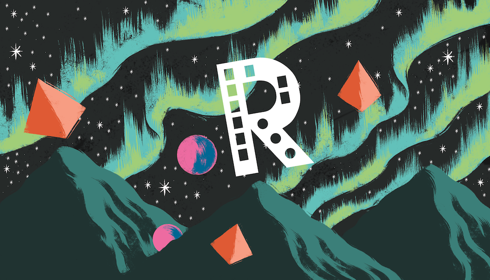

Un viaggio nell’ambiente R
Laboratorio di Ecologia Sperimentale ed Acquacoltura - Dipartimento di Biologia - Università degli Studi di Roma Tor Vergata & CONiSMaInstitute for Conservation Research - San Diego - California & Laboratorio di Ecologia Sperimentale ed Acquacoltura - Dipartimento di Biologia - Università degli Studi di Roma Tor Vergata
Laboratorio di Ecologia Sperimentale ed Acquacoltura - Dipartimento di Biologia - Università degli Studi di Roma Tor Vergata & CONiSMa
Laboratorio di Ecologia Sperimentale ed Acquacoltura - Dipartimento di Biologia - Università degli Studi di Roma Tor Vergata & CONiSMa
Dipartimento di Economia e Finanza - Università degli Studi di Roma Tor Vergata
2021-04-10
Capitolo 1 Prefazione

Sicuramente questo volume non rappresenta la prima risorsa realizzata in lingua italiana che punta a facilitare l’apprendimento e l’utilizzo dell’ambiente R. Una veloce ricerca online consente di trovare decine di predecessori, e certamente altre iniziative analoghe seguiranno. Da un certo punto di vista, una delle tante cose belle di R è che la sua comunità, in continua espansione, è inclusiva e coinvolgente… e questo perchè molti utenti sono catturati dal fascino di R e ne diventano degli appassionati sostenitori. E, infatti, le ragioni principali che hanno spinto gli autori a cimentarsi in questa opera sono il fascino che questo strumento esercita su di loro e la grande importanza che riveste nel loro lavoro.
D’altronde, non è esagerato dire che R è diventato una delle applicazioni di riferimento nell’ambito delle scienze teoriche ed applicate, e che la maggior parte dei corsi di studio relativi a discipline scientifiche ne richiede, ad un certo punto, l’apprendimento. Consapevoli di questo, gli autori si cimentati in questa avventura sulla spinta del loro entusiasmo… ma anche con il preciso obiettivo di realizzare qualcosa di originale e di possibilmente utile per gli studenti di tanti corsi di laurea e scuole di dottorato. Un obiettivo molto ambizioso, forse, ma sicuramente stimolante.
Un famoso sviluppatore una volta ha detto che usare R è un pò come fumare: all’inizio è difficile, a qualcuno provoca il mal di testa e persino sintomi più gravi, ma alla lunga diventa piacevole e genera dipendenza!
Per spiegare il senso di questo progetto è utile partire da quello che è già disponibile in rete (tralasceremo volutamente opere e materiali non disponibili liberamente online). A prima vista ci sono due principali tipologie di risorse:
- Dispense, manuali, e libri (classificabili principalemente a seconda della loro mole) che forniscono una guida di base per i neofiti.
- Monografie tematiche e manuali avanzati che affrontano nel dettaglio argomenti più complessi come la logica grafica del pacchetto ggplot
Quest’opera non vuole essere nessuna delle due… ed entrambe. Ci piacerebbe introdurre all’uso di R chi è digiuno di concetti di programmazione, ma anche mostrare quanto lontano si può arrivare… e quindi abbiamo organizzato il nostro lavoro in due blocchi: una di base, dedicata a chi deve partire da zero, e una più avanzata che tocca diversi temi applicativi, dall’analisi delle serie temporali alla manipolazione dei dati genetici.
Il filo conduttore usato negli esempi e nell’approccio concettuale appartiene sempre al campo delle scienze naturali. D’altronde la squadra degli autori comprende 3 ecologi, uno statistico e uno zoologo… poi la competizione ha fatto il suo corso e l’opera ha preso una piega che privilegia temi come il cambiamento climatico e gli impatti dell’uomo sull’ambiente. Ma la vera storia dietro questo team e questa iniziativa è quella di un gruppo di colleghi a cui piace lavorare insieme e che hanno scoperto che le loro competenze si integrano con un arricchimento reciproco.